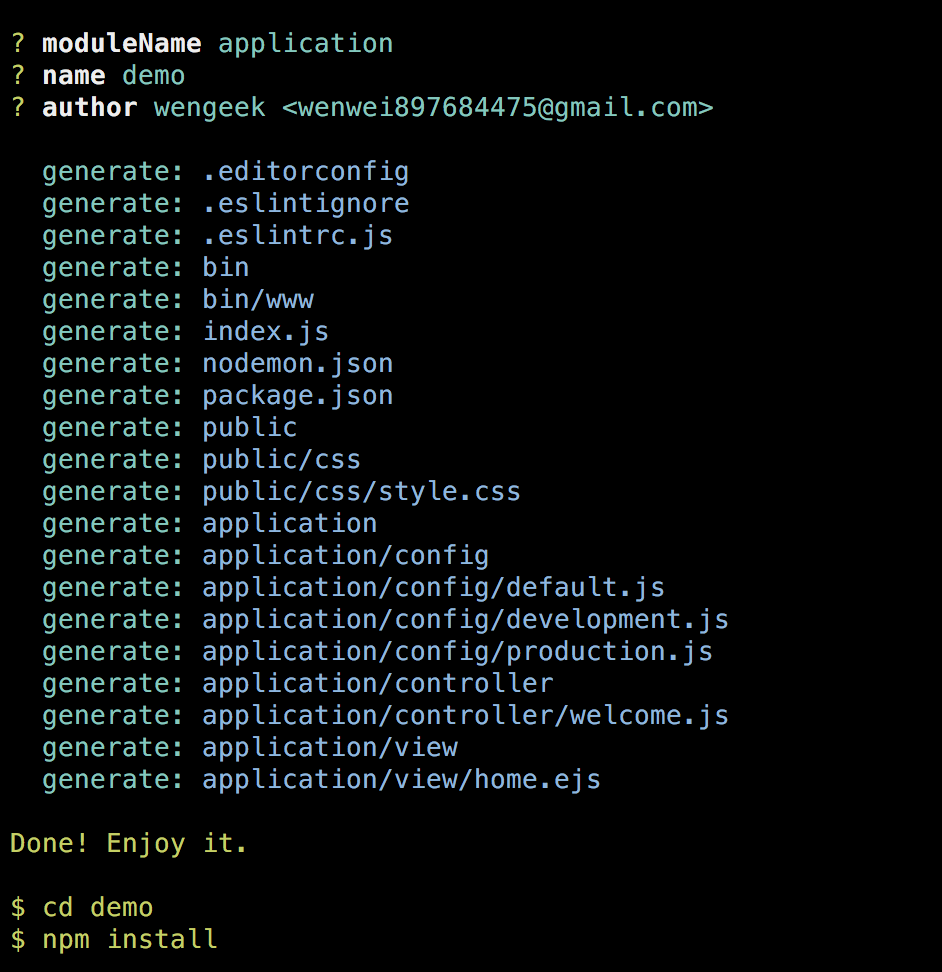

快速入门
本篇将一步步搭建一个salak应用，让你对salak有一个初步的了解
环境准备
- 操作系统：支持Mac、Linux以及Windows
- 运行环境：node > 7.6
脚手架快速搭建
为了快速搭建项目，开发了脚手架salak-cli
安装脚手架
$ npm install -g salak-cli
创建项目
以simple模板为例
$ salak-init simple demo

安装依赖并启动
$ cd demo
$ npm install
$ npm start
至此，项目就可以跑起来了。
接下来，我们不使用脚手架，一步一步搭建项目：
初始化项目
$ mkdir salak-example
$ cd salak-example
$ npm init
$ npm i --save salak
编写主入口文件
创建index.js
$ vi index.js
$ mkdir application
const Salak = require('salak')
const app = new Salak({
baseDir: __dirname,
opts: {
root: 'application'
}
})
app.listen(3000)
配置文件
$ mkdir application/config
$ cd application/config
$ vi default.js
module.exports = {
swagger: {
spec: {
info: {
title: 'Example',
description: 'description for example',
version: '1.0.0'
}
}
}
}
编写控制器
$ cd ..
$ mkdir controller
$ cd controller
$ vi test.js
const { Controller, Joi } = require('salak')
class Test extends Controller {
static behaviors () {
return {
rules: {
index: {
meta: {
summary: '测试接口',
description: '第一个应用接口'
},
validate: {
query: {
id: Joi.number().description('标示')
}
}
}
}
}
}
actionIndex () {
this.sendJson(0, 'ok', {
id: this.query.id || 'unknow'
})
}
}
module.exports = Test
启动服务
$ cd ../..
$ node index
可以访问 http://localhost:3000/test 看到具体的数据
如果访问 http://localhost:3000/test?id=error 将会显示具体的错误信息
文档访问 http://localhost:3000/api-docs 可以看到具体的接口详情